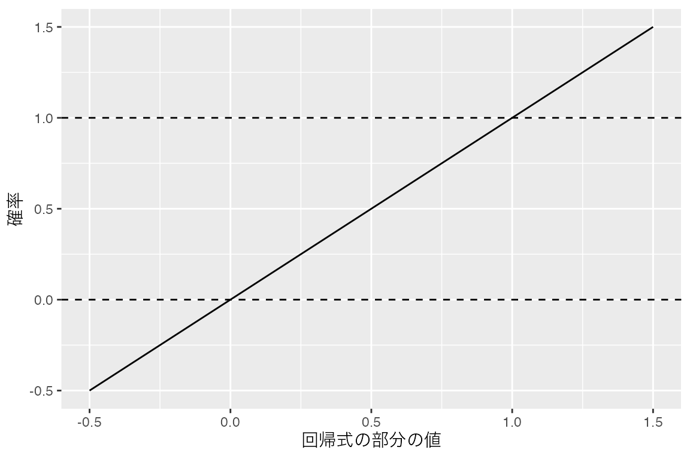
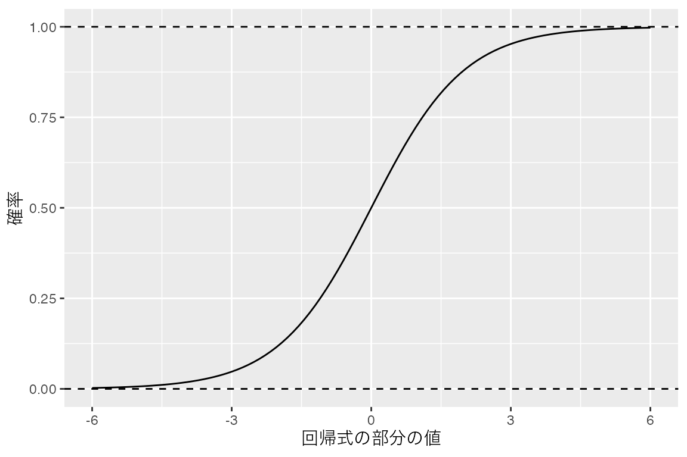

# 平均限界効果の計算に使います。インストールは一度だけ行います。
install.packages("marginaleffects")ロジスティック回帰
「働いている」「働いていない」のように、2つの値しかとらない変数を分析する方法を学びます。ロジスティック回帰で、年齢によって働いている確率がどう違うかを調べます。
1 目的
年齢が高いほど、働いている人の割合は低いのでしょうか。年齢が1歳違うと、働いている確率はどれだけ違うのでしょうか。このページでは、成人1,000人が生活や仕事について答えたという設定の架空の調査データを使い、年齢と就業の関係を調べます。
働いているかどうかは、働いていれば1、働いていなければ0で表せます。このように0と1の2つの値しかとらない変数を被説明変数にして、これまでと同じように直線を当てはめると、確率の予測が1を超えることがあります。ロジスティック回帰は、予測する確率が0から1の間に収まるようにした回帰のモデルです。
まず復習として、0/1の変数をそのまま年齢に回帰します。この直線の回帰を線形確率モデルと呼びます。次に、同じ問いをロジスティック回帰で分析します。年齢ごとに働いている確率を予測し、年齢が1歳違うときの確率の違いも求めます。分析のコードはAIに作ってもらい、自分のPositronで実行して確かめましょう。
「第8節（ロジスティック回帰にする）」までを読んで実行し、「第9節（練習問題）」に取り組んでください。就業区分のように3種類以上の値をとる変数を被説明変数にする分析は、多項ロジスティック回帰のページで扱います。
2 準備
調べたいこととデータ
ここでは模擬調査データを使います。成人1,000人が生活や仕事についてのアンケートに答えたと想定した架空のデータで、1行が1人です。今回使うのは次の2列です。
| 列名 | 内容 | 単位・値 |
|---|---|---|
age |
年齢 | 20〜79歳、1歳刻みの整数 |
employment_status |
就業区分 | regular（正規雇用）/ nonregular（非正規雇用）/ self_employed（自営業等）/ not_employed（非就業） |
就業区分の4種類のうち、正規雇用と非正規雇用と自営業等の3つを「働いている」とし、非就業を「働いていない」とします。そのうえで、働いていれば1、働いていなければ0をとる列を作って分析します。
0/1の変数の平均と確率
ある条件にあてはまるときに1、あてはまらないときに0をとる変数をダミー変数と呼びます。データの前処理のページでは、就業区分からダミー変数 employed を作りました。単回帰モデルのページの「2群の平均差とダミー変数」では、ダミー変数を説明変数にして2群の平均を比べました。このページではダミー変数を被説明変数にします。
0と1しかとらない変数の平均を計算すると、値が1の人の割合と一致します。例えば、5人の employed が1、1、0、1、0なら、平均は \((1 + 1 + 0 + 1 + 0) \div 5 = 0.6\) です。これは、5人のうち働いている3人の割合60%と同じです。そのため、0/1の変数を年齢に回帰したときの回帰直線上の値は、その年齢の人が働いている確率として読めます。この直線上の値を当てはめ値と呼びます。
確率の差を百分率で表すときは、「ポイント」という単位を使います。例えば、働いている確率が50%から40%に下がるのは10ポイントの低下です。「10%低い」と書くと、50%の1割にあたる5ポイントだけ低い45%と読まれることがあります。2つの書き方を区別してください。
ファイルとRの準備
RとPositronの導入、フォルダの開き方やコードの実行方法は、「RとPositronのセットアップ」で確認してください。Positronで授業用フォルダを開き、今回のコードを保存するRスクリプトを用意します。例えば、logistic-regression.R という名前で保存してください。
Positronで開いている授業用フォルダに、模擬調査データのCSVを保存してください。ファイル名は mock_survey.csv です。多項式回帰などのページで保存したCSVがこのフォルダにあれば、そのファイルを使えます。コードブック（データの説明書）にはすべての列の説明があります。
readr はCSVの読み込み、dplyr は列の追加と年代ごとの集計、ggplot2 は作図に使います。tidyverseを導入済みなら、この3つの追加のインストールは不要です。
このページでは新しく marginaleffects というパッケージを使います。ロジスティック回帰の結果から、年齢が1歳違うときの確率の違いを計算するためのパッケージです。初めて使う場合は、次のコードを一度だけ実行してインストールしてください。
CSVの読み込みと0/1の列
まず、CSVを読み込んで survey という名前で保存します。nrow() で1,000人分あることを確認してください。
survey <- readr::read_csv("mock_survey.csv", show_col_types = FALSE)
nrow(survey)[1] 1000続いて、就業区分から employed の列を作ります。%in% は左の値が右に並べた値のどれかに一致するかを調べる記号です。if_else() には条件、条件が成り立つ場合の値、成り立たない場合の値を順に書きます。1L と 0L は整数の1と0です。列を加えたデータを同じ survey という名前で保存し直します。手元のCSVファイルは変わりません。
survey <- survey |>
dplyr::mutate(
employed = dplyr::if_else(
employment_status %in% c("regular", "nonregular", "self_employed"),
1L, 0L
)
)就業区分と employed の組み合わせの人数を数え、employed の平均を求めます。
survey |> dplyr::count(employment_status, employed)# A tibble: 4 × 3
employment_status employed n
<chr> <int> <int>
1 nonregular 1 175
2 not_employed 0 326
3 regular 1 361
4 self_employed 1 138mean(survey$employed)[1] 0.674not_employed の326人だけが0で、残りの3区分の674人が1になっています。平均の0.674は、1,000人のうち働いている人の割合67.4%です。
年代ごとの働いている人の割合
10歳刻みの年代ごとに、人数と employed の平均、つまり働いている人の割合を求めます。%/% は割り算の商（整数部分）を求める記号です。age %/% 10 * 10 は、例えば37歳を30に、62歳を60にします。
survey |>
dplyr::mutate(age_group = age %/% 10 * 10) |>
dplyr::group_by(age_group) |>
dplyr::summarise(n = dplyr::n(), employment_rate = mean(employed))# A tibble: 6 × 3
age_group n employment_rate
<dbl> <int> <dbl>
1 20 167 0.952
2 30 167 0.862
3 40 167 0.766
4 50 167 0.605
5 60 166 0.488
6 70 166 0.367働いている人の割合は年代が上がるほど低く、20代の約95.2%から70代の約36.7%まで下がります。20代の割合は上限の100%にかなり近い値です。
3 分析の仕様を言葉にする
最初の分析では employed をそのまま年齢に回帰します。0/1の変数を被説明変数にしても、回帰の計算はこれまでの単回帰と同じです。このように0/1の変数を直線で表すモデルを線形確率モデルと呼びます。結果を後でロジスティック回帰と比べるため、まずこのモデルを確かめておきます。
線形確率モデルを式で書くと、次のようになります。
\[ \Pr(\text{働いている}_i) = \beta_0 + \beta_1 \times \text{年齢}_i \]
\(\Pr(\cdot)\) は確率を表します。右辺の \(\beta_0 + \beta_1 \times \text{年齢}_i\) はこれまでの回帰式と同じ形です。このページでは、この部分を回帰式の部分と呼びます。線形確率モデルは、回帰式の部分の値をそのまま働いている確率とみなします。そのため、回帰式の部分の値と確率の関係は、下の図のように直線になります。

回帰式の部分の値が0から1の間にあれば、確率として読めます。しかし、直線には上限も下限もありません。回帰式の部分の値が1を超えると確率も1を超え、0を下回ると確率も負になります。
線形確率モデルで知りたいことは、年齢が1歳高いと働いている確率が平均で何ポイント違うかです。
| 項目 | 今回の仕様 |
|---|---|
| データ | employed の列を加えた survey |
| 対象 | 1,000人全員 |
| 被説明変数 | employed（働いていれば1、働いていなければ0の整数） |
| 説明変数 | age（年齢、20〜79歳の整数） |
| モデル | 切片を含む単回帰（線形確率モデル）。employed を年齢に回帰する |
| 数値の出力 | summary() の結果と分析に使った人数。当てはめ値の最小値と最大値、当てはめ値が1を超える人数 |
| 図 | 横軸が年齢、縦軸が employed の散布図に回帰直線を重ねる。点は半透明にし、横方向にだけ少しずらす。信頼帯は表示しない |
当てはめ値は働いている確率として読む値です。確率は0から1の範囲にあるので、当てはめ値がこの範囲に収まっているかも確かめます。
employed は0か1しかとらないので、散布図の点は縦軸の0と1の高さに2列に並びます。同じ年齢の人の点は重なるため、点を半透明にし、横方向にだけ少しずらします。縦方向にずらすと、点が0と1以外の高さに描かれてしまいます。
4 AIへの指示例
AIには上の表をもとにRコードを作ってもらいます。AIが返したコードは自分のPositronで実行します。AIには変数名や値の範囲などの説明だけを伝え、CSVや個々の回答は渡しません。
単回帰モデルのページと同じ組み立てなので、ここでは全文だけを示します。指示例では、準備で employed を作ったことと値の意味を伝えています。0/1の被説明変数と伝えると、AIがロジスティック回帰を提案することがあります。今回は後で比べるため、あえて lm() を指定しています。
返ってきたコードをPositronのスクリプトに貼り、準備コードに続けて実行します。実行後は「第6節（検証チェックリスト）」と照らし合わせ、必要に応じて下の参照コードも開いてください。エラーが出たら、個人の回答データを含めず、エラーメッセージと該当するコードをAIに伝えて修正を依頼してください。
5 参照コードと出力
自分のコードを実行してから開き、結果を照合してください。
6 検証チェックリスト
年齢の係数が約0.0123と正の値になった場合は、employed の0と1が逆になっています。準備の count() の結果で not_employed だけが0になっているかを確かめてください。
AIによっては、点をずらすのに geom_jitter() を使うこともあります。geom_jitter() は何も指定しないと縦方向にもずらすので、height = 0 が付いているかを確かめてください。
AIが glm() で family = binomial() を指定したコードを返した場合は、次の節で扱うロジスティック回帰になっています。ここでは lm() を使うよう依頼し直してください。
7 結果の解釈
推定した係数を四捨五入して書くと、回帰直線は次の式になります。
\[ \widehat{\text{働いている確率}} = 1.283 - 0.0123 \times \text{年齢} \]
年齢が1歳高いと、働いている確率の当てはめ値は約0.0123、つまり約1.2ポイント低くなります。10歳の違いなら約12ポイントです。線形確率モデルでは、係数をそのまま確率の違いとして読めます。
一方で、当てはめ値の最大値は約1.037です。これは式に20歳を代入した値で、確率としてはありえません。当てはめ値が1を超えるのは20〜23歳の71人です。散布図でも、20歳付近では直線が1の列より上に出ています。直線は、どの年齢でも1歳違えば同じ1.2ポイントずつ確率が変わるという形しか表せません。準備で見たように、20代の働いている人の割合は100%に近く、それ以上は大きく上がれません。それでも直線は若い年齢に向かって同じ傾きで上がり続けるため、1を超えてしまいます。
次の節では、確率の予測が0から1の間に収まるロジスティック回帰で同じ問いを分析します。
8 ロジスティック回帰にする
知りたいことと仕様の変更
知りたいことは「年齢が1歳高いと、働いている確率は何ポイント違うか」のままにして、モデルをロジスティック回帰に変えます。ロジスティック回帰では、確率の予測が0から1の間に収まります。あわせて、20・50・79歳で働いている確率がいくつと予測されるかも求めます。
ロジスティック回帰でも、線形確率モデルと同じ回帰式の部分 \(\beta_0 + \beta_1 \times \text{年齢}_i\) を作ります。ただし、その値をそのまま確率とはせず、ロジスティック関数という関数で確率に変換します。
\[ \Pr(\text{働いている}_i) = \frac{1}{1 + \exp\{-(\beta_0 + \beta_1 \times \text{年齢}_i)\}} \]
\(\exp(x)\) は \(e\)（約2.718）の \(x\) 乗を表します。ロジスティック関数は、どんな値を入れても0から1の間の値を返します。下の図のように、入れる値が大きいほど1に近づき、小さいほど0に近づきます。その間はS字の曲線でつながります。線形確率モデルの直線と違い、確率が0から1の範囲を外れることはありません。

\(\beta_1\) が負なら、年齢が高いほど回帰式の部分の値が小さくなり、確率は0に近づきます。S字の曲線は確率が0.5の付近で最も急で、0や1に近いところではゆるやかです。そのため、年齢が1歳違うときの確率の違いは、年齢によって変わります。
ロジスティック回帰は一般化線形モデルと呼ばれるモデルの1つです。Rでは glm() で推定し、family = binomial() を指定するとロジスティック回帰になります。binomial() は被説明変数が0か1をとることを表す指定です。係数の推定には、線形モデルで使ってきた最小二乗法ではなく最尤法を使います。最尤法は、観測された0と1の並びが最も起こりやすくなるように係数を選ぶ方法です。
結果は次の2つの値で読みます。
- 予測確率：推定したモデルから求めた、ある年齢の人が働いている確率です。線形確率モデルの当てはめ値にあたります。
- 平均限界効果：限界効果とは、年齢が少しだけ高いときの確率の変化を1歳あたりに直した値です。限界効果はその年齢での曲線の傾きにあたり、実際に1歳違う2人の予測確率の差とは少しずれますが、近い値になります。ロジスティック回帰では限界効果が年齢によって違うので、1,000人それぞれの年齢で求めて平均します。この平均を平均限界効果と呼びます。
仕様の変更は次のとおりです。データ、対象、被説明変数、説明変数は変えません。
| 項目 | ロジスティック回帰での仕様 |
|---|---|
| データと対象 | 最初の回帰と同じ survey の1,000人 |
| 被説明変数と説明変数 | 最初の回帰と同じ employed と age |
| モデル | ロジスティック回帰。glm() で family = binomial() を指定する |
| 数値の出力 | summary() の結果と分析人数。20・50・79歳の予測確率。marginaleffects で求めた年齢の平均限界効果 |
| 図 | 最初の回帰と同じ散布図に、ロジスティック回帰の曲線を重ねる。点は半透明にし、横方向にだけ少しずらす。信頼帯は表示しない |
最初のプロンプトを自分で修正し、AIにこの分析を依頼してください。 モデルを glm() によるロジスティック回帰に変えること、予測確率と平均限界効果を求めること、散布図にロジスティック回帰の曲線を重ねることが伝わるか確かめます。最初のプロンプトのうち次の4か所は、そのままでは今回の分析と食い違うので書き換えます。
- 「線形確率モデルを推定する」は、ロジスティック回帰を推定する指定に変える。
- 「lm()で推定してください」は、
glm()でfamily = binomial()を指定する推定に変える。 - 「当てはめ値の最小値と最大値、当てはめ値が1を超える人数」は、20・50・79歳の予測確率と
marginaleffectsによる年齢の平均限界効果に変える。 - 「同じモデルの回帰直線を重ねてください」は、ロジスティック回帰の曲線を重ねる指定に変える。
確認と解釈
family = "binomial" や family = binomial と書いても同じロジスティック回帰になります。AIが予測確率を marginaleffects::predictions() で求めた場合も、数値が上と一致すれば正解です。この教材では平均限界効果を marginaleffects で求めます。AIが別のパッケージを使った場合は、marginaleffects::avg_slopes() で求めるよう依頼し直してください。summary() に binomial family が見当たらない場合は、「問3」で扱う書き方の問題があります。
ロジスティック回帰で予測した働いている確率は、20歳で約94.9%、50歳で約71.4%、79歳で約26.2%です。線形確率モデルの当てはめ値と並べると次のようになります。線形確率モデルの値は第7節（結果の解釈）の式に年齢を代入したものです。
| 年齢 | 線形確率モデル | ロジスティック回帰 |
|---|---|---|
| 20歳 | 1.037 | 0.949 |
| 50歳 | 0.668 | 0.714 |
| 79歳 | 0.311 | 0.262 |
20歳の予測は、線形確率モデルでは1を超えていましたが、ロジスティック回帰では1を下回っています。散布図の曲線も若い年齢では1に近づきながらゆるやかになり、0から1の範囲に収まっています。線形確率モデルの散布図では、20歳付近で直線が1の列より上に出ていました。
年齢の平均限界効果は約−0.0116です。年齢が1歳高いと、働いている確率は平均で約1.2ポイント低いと読みます。線形確率モデルの係数−0.0123とほぼ同じ大きさです。年齢による確率の違いを1つの数にまとめると、今回のデータでは2つのモデルの結果は大きく変わりません。
ただし、平均限界効果は1,000人の限界効果の平均です。どの年齢でも1歳違えば1.2ポイントずつ確率が違うという意味ではありません。予測確率は20歳から50歳までの30年で約23.5ポイント、50歳から79歳までの29年で約45.2ポイント下がります。1歳あたりにすると、前半は約0.8ポイント、後半は約1.6ポイントです。働いている確率が1に近い若い年齢では、確率がそれ以上大きく変わる余地がありません。そのため曲線はゆるやかになります。
ロジスティック回帰の係数は確率についての値ではなく、ロジスティック関数で変換する前の回帰式の部分についての値です。年齢の係数−0.0672を「1歳高いと確率が6.7ポイント低い」とは読みません。係数の符号が負であることから、年齢が高いほど働いている確率が低いという向きは分かります。年齢の行のp値は <2e-16 と表示され、p < .001 と報告します。確率がどれだけ違うかは、平均限界効果と予測確率で読みます。
線形確率モデルとロジスティック回帰のどちらを使うかは、目的によります。線形確率モデルは係数をそのまま確率の違いとして読めます。ただし、今回のように当てはめ値が0から1の範囲を超えることがあり、確率の違いが年齢によって変わる様子も表せません。ロジスティック回帰では予測確率が0から1の範囲に収まり、確率の変わり方が年齢によって違うことも表せます。その代わり係数をそのままでは読めないので、予測確率や平均限界効果を計算して報告します。
最後に、この結果から言えないことを確認します。今回のデータは、異なる年齢の人にある時点で一度だけ尋ねた調査です。50歳の人と79歳の人の違いは、同じ人が50歳から79歳になると働いている確率が下がることを示すとは限りません。生まれた年代による働き方の違いなど、年齢以外の違いも含まれているからです。
本文の分析はここまでです。続いて、「第9節（練習問題）」に取り組んでください。
9 練習問題
問1：教育年数を加える
同じ survey の1,000人を使い、年齢に加えて教育年数 education_years も説明変数にしたロジスティック回帰を推定してください。教育年数は9・12・14・16・18のいずれかの整数です。「第8節（ロジスティック回帰にする）」で修正したプロンプトのどこを書き換えればよいかを考えてから、AIにコードを依頼してください。教育年数を加えると年齢だけでは予測確率が決まらないので、今回は予測確率と図は求めません。
summary() の結果、分析人数、年齢と教育年数それぞれの平均限界効果を表示してください。そのうえで、教育年数の平均限界効果を言葉で説明してください。どのような人どうしを比べた値かという条件も付けてください。
問2：結果を説明する
本文の結果を見た友人が、次のように言ったとします。
年齢の係数が−0.067だから、年齢が1歳高いと、働いている確率は6.7ポイント低いんだね。それに平均限界効果が−0.0116だから、20歳と21歳の人でも60歳と61歳の人でも、働いている確率は同じように1.2ポイント違うんだ。
この2つの文は、それぞれどこが本文の結果と合わないでしょうか。本文の数値を使って3〜4文で説明してください。
問3：動くコードが指示どおりかを確かめる
「employed を年齢に回帰するロジスティック回帰を推定したい」と指示したところ、次のコードが返ってきたとします。
model_check <- glm(employed ~ age, data = survey)
summary(model_check)エラーなく実行でき、人数も1,000人です。このコードは指示とどこが違うでしょうか。summary() の出力のどこを見れば気づけるかも答えてください。
10 発展（任意）
次に読むページ
このページでは就業区分の4種類を「働いている」と「働いていない」の2つにまとめました。4種類を区別したまま、どの区分になりやすいかを調べる方法は、多項ロジスティック回帰のページで扱います。
最終更新: 2026-10-28